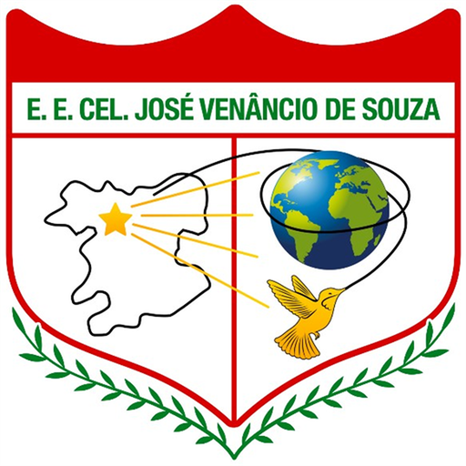
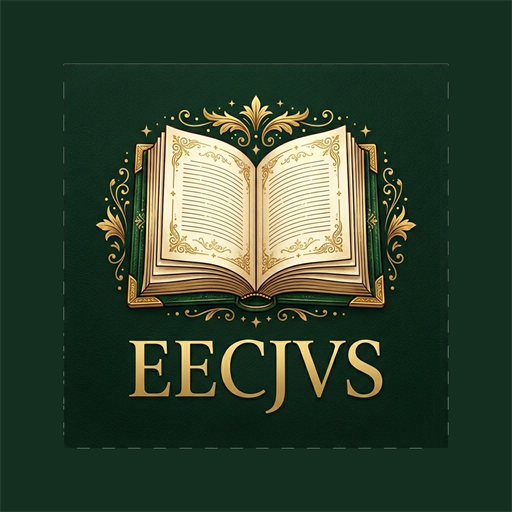
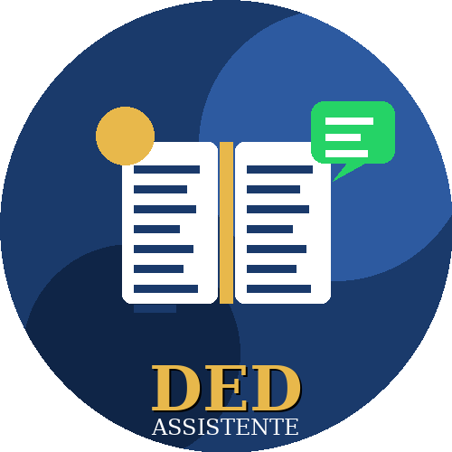
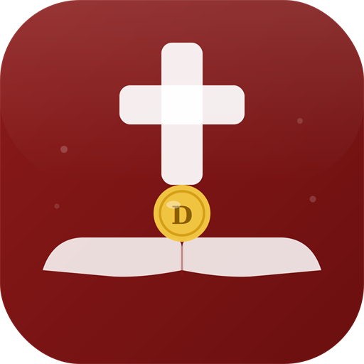
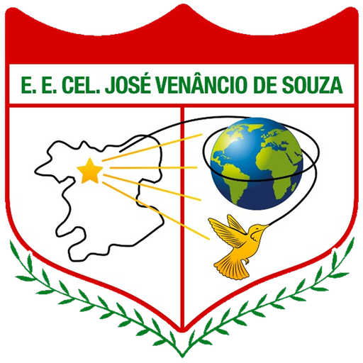

Aplicativo mobile
Agendamento Venâncio
Aplicativo iOS com experiência de PWA, navegação em WebView, suporte a notificações e acesso rápido para rotinas de agendamento.
Disponível na App Store e no Google Play.
Desenvolvimento de soluções digitais
Portfólio de aplicativos e sistemas criados para resolver rotinas reais: biblioteca, agendamento, apoio pedagógico, gestão de contribuições e ferramentas escolares.

Projetos pensados para a rotina de quem vai usar, com interface simples e fluxo direto.
Experiências para celular, navegador e painéis administrativos prontos para operação.
Construção, ajustes, publicação, domínio e orientação para colocar o sistema em uso.
Portfólio
Aplicativos e plataformas criados para escolas, equipes e comunidades que precisam sair da planilha e ganhar um sistema confiável.
Aplicativo iOS com experiência de PWA, navegação em WebView, suporte a notificações e acesso rápido para rotinas de agendamento.
Disponível na App Store e no Google Play.

Plataforma para organizar acervo, facilitar consulta e apoiar a rotina de empréstimos e controle de livros.
Disponível na App Store e no Google Play.

Assistente para apoiar planejamento, organização de conteúdos e tarefas pedagógicas com respostas rápidas e contexto escolar.
Atendimento direto via WhatsApp.
WhatsApp da assistente
Solução para organizar registros de dízimos e contribuições com clareza, praticidade e visão administrativa.
Disponível na App Store e no Google Play.

Urna eletrônica escolar local com painel administrativo, cadastro de turmas e candidatos, apuração e exportação de resultados.
Sistema local, sem publicação nas lojas de aplicativos.
Como posso ajudar
Portfólios, páginas institucionais e apresentações digitais prontas para domínio próprio.
Apps e PWAs para celular, com navegação simples e funcionalidades alinhadas ao uso real.
Painéis para cadastro, acompanhamento, relatórios e exportação de dados importantes.
Assistentes com respostas personalizadas para atendimento, educação e produtividade.
Método
Mapeio o problema, o público e o fluxo principal para construir o essencial primeiro.
Crio uma versão navegável para validar telas, textos e comportamento antes de evoluir.
Finalizo ajustes, preparo arquivos, domínio e orientações para o projeto ficar disponível.
Contato
Use este portfólio para apresentar projetos, enviar para clientes ou publicar diretamente no domínio adilsondev.com.br.